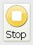

Pour jouer la prosodie il suffit de cliquer sur Lecture > Jouer ou de cliquer simplement sur le boutton
Si vous souhaitez interrompre la lecture, il suffit de cliquer sur Lecture > Stop ou de cliquer simplement sur le boutton
